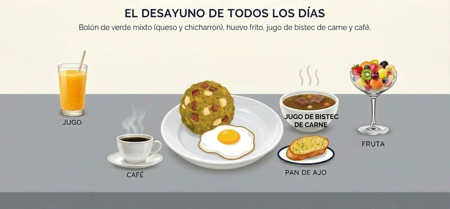

Desayunos de Rossy
Bolones, jugos, fruta y café · de lunes a sábado por la mañana
Cocina de Rossy
Bolones, jugos, fruta y café · de lunes a sábado por la mañana
Cocina de Rossy
El desayuno es la decision comercial mas importante que ha tomado el negocio. La lasana tiene un costo alto y un ticket que la familia solo paga el fin de semana; el desayuno cuesta entre USD 1,05 y USD 1,72 prepararlo, se vende entre USD 2,50 y USD 3,50, y se puede vender todos los dias. Eso convierte un negocio de dos dias a la semana en un negocio de lunes a sabado, con la lasana como ingreso extra de fin de semana.

El cliente elige cuánto quiere gastar. Así el que tiene poco compra igual, y el que tiene más deja más.
Incluye: Bolón de verde con queso, huevo frito y café pasado.
Es la puerta de entrada. Precio bajo, se prepara en minutos, deja USD 1,45.
Incluye: Bolón de verde con chicharrón, huevo frito y jugo natural.
El más pedido por los hombres y por quien trabaja temprano. Deja USD 1,65.
Incluye: Bolón, huevo frito, jugo natural, ensalada de frutas pequeña y café.
Es el que conviene empujar: el cliente siente que recibe mucho y deja USD 1,78.
Un bolón solo se ve pobre. El mismo bolón con jugo, fruta y café se ve como un desayuno completo y se puede cobrar USD 3,50.
| Acompañamiento | Precio | Variedades | Cómo se aprovecha |
|---|---|---|---|
| Jugos naturales | USD 1,50 | Naranja, morocho, maracuyá, tomate de árbol, melón, sandía. | Se preparan al momento con fruta de la zona, que es barata y de temporada. |
| Batidos | USD 2,00 | De banano, papaya, avena o con leche. | El batido con avena se vende como desayuno completo para quien no quiere comer pesado. |
| Ensalada de frutas | USD 2,00 | Fruta picada del día con yogur o miel opcional. | Es lo que más compran las mujeres y los jóvenes. Se prepara en vaso o en concha. |
| Café pasado | USD 1,00 | Café de olla, con leche o negro. | No es para ganar: es para que el cliente no se vaya a otra parte a tomarlo. |
| Pan de ajo | USD 2,50 | 4 unidades, para llevar a casa. | Aprovecha el mismo horno de la lasaña. |
| Producto | Precio | Costo | Queda | Margen |
|---|---|---|---|---|
| Bolon de verde con queso | USD 2.50 | USD 1.05 | USD 1.45 | 58% |
| Bolon con chicharron | USD 3.00 | USD 1.35 | USD 1.65 | 55% |
| Desayuno completo | USD 3.50 | USD 1.72 | USD 1.78 | 51% |
| Jugo o batido aparte | USD 1.50 | USD 0.55 | USD 0.95 | 63% |
| Ensalada de frutas | USD 2.00 | USD 0.85 | USD 1.15 | 58% |
| Cafe pasado | USD 1.00 | USD 0.28 | USD 0.72 | 72% |
Lo importante: con 32 desayunos al día de lunes a sábado el negocio ingresa alrededor de USD 2.434 al mes y deja USD 1.333 de contribución. Y el punto de equilibrio se alcanza con solo 6 desayunos completos al día.
| Momento | Qué se hace |
|---|---|
| Horario | De 6:30 a 10:30 de la mañana, de lunes a sábado. Fuera de ese horario se atienden pedidos por encargo. |
| Día anterior | Se compran los verdes, la fruta y el queso; se cocinan los chicharrones y se deja lista la masa del bolón. |
| 5:30 a 6:30 | Se amasa y se fríen los bolones, se preparan los huevos y se corta la fruta. |
| 6:30 a 10:30 | Se atiende y se entrega. La fruta se corta en tandas para que no se pase. |
| 10:30 a 12:00 | Se lava, se ordena y se prepara la salsa de la lasaña. |
| Viernes y sábado | Después del desayuno se arma y se hornea la lasaña para el fin de semana. |
| Insumo | Cuánto | Dónde |
|---|---|---|
| Verde (plátano) | 6 a 8 unidades por cada 10 bolones | Mercado de La Libertad |
| Queso fresco | 1,5 kg por cada 30 porciones | Mercado o proveedor fijo |
| Chicharrón | 1 kg por cada 25 porciones | Carnicería del mercado |
| Huevos | 1 por cliente, más 10% de reserva | Mercado |
| Fruta de temporada | Según lo que esté barato esa semana | Mercado, preguntando precio |
| Café y leche | Para 30 tazas | Distribuidor |
| Detalle | Cómo se hace |
|---|---|
| La bandeja | Un plato blanco con el bolón, el huevo encima y la fruta en un vaso aparte. El plato blanco hace que la comida se vea más grande y más limpia. |
| El vaso del jugo | Vaso alto, con una hoja de hierbabuena o un trozo de fruta en el borde. |
| La fruta | En vaso transparente, para que se vean los colores. |
| El pan de ajo | En bolsa de papel con el sello de la marca. |
| La foto | Se publica el plato terminado a las 7 de la mañana, que es cuando la gente está decidiendo qué desayunar. |
Refinería, comercio y pesca. Salen de casa a las 6 y compran algo en el camino.
Piden varias porciones para el personal.
Compran la opción más económica o solo el bolón.
Piden desayuno completo en casa, más tarde.
En temporada alta son los que más piden jugos y fruta.